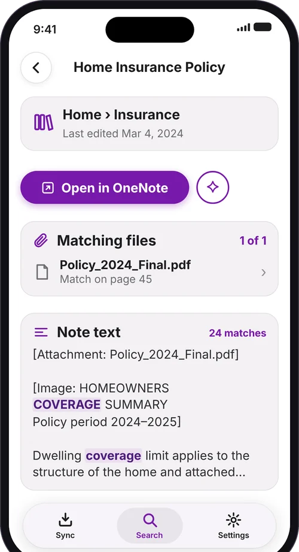

OneSearch
Private search for OneNote on iPhone and iPad. Find your notes and what's inside your PDFs, Office files and scans.

OneNote is great for keeping things. Finding them again is harder, especially when the answer is inside an attached PDF, a scan or a photo. So OneSearch reads all of it and finds it for you, privately, on your device.
What makes OneSearch different

There are many ways to search, but I wanted one search that covers everything in OneNote:
- Notes, files and scans together. PDFs, Office files and images attached to your notes become searchable alongside the notes themselves.
- Shows where it is. Every result names the notebook, section and note, so you know where it came from.
- Open the match. Jump straight to the file or page, with the words you searched for highlighted.
- Filters that fit. Narrow by type, notebook, section and date.
- Related items. Notes and files that belong together are linked, so they show up together.
Search with real logic

Go beyond plain keywords. The logic buttons sit right under the search box, so you never have to remember the syntax:
roof AND warrantyboth words must be thereroof OR guttereither word will doroof NOT 2019leave out that word(roof OR gutter) AND quotebrackets group the logic"water damage"words together, in order
Write AND, OR and NOT in capitals; in lowercase they are ordinary words. Prefer plain words? Just type what you mean.
Inside your files, down to the page

- Searches inside files. PDFs, Word, Excel and PowerPoint files, and images, down to the page.
- Reads scans and photos. Text recognition runs on your device, so a photographed receipt is as searchable as a typed note.
- Opens where the match is. No scrolling through a 60-page PDF to find the one line you wanted.
- Works where OneNote for iPhone can't. That's the whole point of OneSearch.
Typos forgiven, ideas found

- Forgives typos. Misspell a word and you still find the note.
- Finds the same idea in different words. Search for one way of saying it and see notes that say it another way.
- Smart, but on your device. The language understanding runs on your iPhone or iPad. Nothing is sent anywhere.
Private. On your iPhone or iPad.

- No server, no ads, no analytics. Nothing is sent to us or to anyone else. OneSearch only talks to Microsoft to sign you in and read your notes.
- Read-only. OneSearch never changes or deletes anything in OneNote.
- On-device text recognition and AI. Scans, photos and smart search all run on your device.
- You're in control. Choose which notebooks to sync. Sign out and the local index is removed.
Instant, even offline

- Results appear instantly. Your notes are indexed and searched on the device.
- No connection needed. Search on a plane, in a basement, anywhere.
- Stays up to date. Sync keeps your private copy current in the background.
Made for iPhone and iPad
OneSearch runs on both. On iPad the layout adapts to the larger screen, in portrait and landscape, so search, results and PDFs have room to breathe. Your index stays on each device, and you sign in once on each.
- iPhone: fast search wherever you are.
- iPad: a roomier layout for portrait and landscape, with results and files easy to read.
How it works
- Sign in with Microsoft and choose your notebooks.
- Notes are searchable within minutes.
- Files and scans follow over hours or days for large notebooks, and each one becomes searchable as soon as it is read.
- Syncing continues in the background.
Get OneSearch
Requires an iPhone (iOS 27 or later) or iPad (iPadOS 27 or later) and a Microsoft account with OneNote notebooks.
Screenshots show sample notebooks.